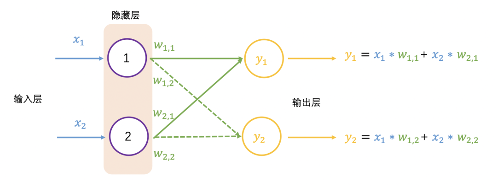

【学习笔记】如何从头实现一个神经网络
神经网络的组成
- 感知机（神经元）
- 权重的理解
神经网络的工作原理
神经网络的工作大致可分为前向传播和反向传播，类比人们学习的过程，前向传播如读书期间，学生认真学习知识点，进行考试，获得自己对知识点的掌握程度；反向传播是学生获得考试成绩作为反馈，调整学习的侧重点。
前向传播
在2个输入和两个输出的神经网络中

前向传播对应的输出为 和 ，换成矩阵表示为
以上$W$矩阵每行数乘以$X$矩阵每列数是矩阵乘法，也称为点乘（dot product）或内积（inner product)。
继续增加一层隐藏层，如下图所示，并采用矩阵乘法表示输出结果，可以看到一系列线性的矩阵乘法，其实还是求解 4 个权重值，这个效果跟单层隐藏层的效果一样：
激活函数的作用
大多数真实世界的数据是非线性的，我们希望神经元学习这些非线性表示，可以通过激活函数将非线性引入神经元。
激活函数 ReLU（Rectified Linear Activation Function）的阈值为 0，对于大于 0 的输入，输出为输入值，对于小于 0 的输入值，输出为 0，公式和图像表示如下：
这里扩展一下，激活函数有很多种，例如常用的 sigmoid 激活函数，只输出范围内的数字$(0,1)$ ，它将无界输入转换为具有良好、可预测的输出形式，sigmoid 函数的公式和图像如下。
加入 ReLU 激活函数的神经网络如下图所示：
再以徒步为例， $y_1=5$表示去徒步， $y_2=1$表示不去徒步，在生活中会用概率表示徒步的可能性，用 SoftMax 函数调整输出值，公式如下。
$y_1=5$和$y_2=1$的计算过程如下，可以看到徒步的概率是 98%：
加入 SoftMax 函数的神经网络如下图所示：
获得神经网络的输出值 (0.98, 0.02) 之后，与真实值 (1, 0) 比较，非常接近，仍然需要与真实值比较，计算差距（也称误差，用$e$表示），就跟摸底考试一样，查看学习的掌握程度，同样神经网络也要学习，让输出结果无限接近真实值，也就需要调整权重值，这里就需要反向传播了。
反向传播
在反向传播过程中需要依据误差值来调整权重值，可以看成参数优化过程，简要过程是，先初始化权重值，再增加或减少权重值，查看误差是否最小，变小继续上一步相同操作，变大则上一步相反操作，调整权重后查看误差值，直至误差值变小且浮动不大。
学习率
斜率的大小表明变化的速率，意思是当斜率比较大的情况下，权重 变化所引起的结果变化也大。把这个概念引入求最小化的问题上，以权重导数乘以一个系数作为权重更新的数值，这个系数我们叫它学习率(learning rate)，这个系数能在一定程度上控制权重自我更新，权重改变的方向与梯度方向相反，如下图所示，权重的更新公式如下：
$$W{new}=W{old}-学习率\times导数$$
误差是目标值与实际输出值之间的差值，公式如下：
$$损失函数=(目标值-实际值)^{2}$$
带入输入表示为：
$$MSE-Loss=(w\times x-y_{true})^{2}$$
导数为：
$$(w\times x-y)'=2x(wx-y)=2x(y-y_{true})$$
经过反复迭代，让损失函数值无限接近 0，浮动不大时，获得合适的权重，即神经网络训练好了。
损失函数的Python实现代码如下。
import numpy as np def mse-loss(y_true, y_pred): # y_true and y_pred are numpy arrays of the same length. return ((y_true - y_pred) ** 2).mean() y_true = np.array([1, 0, 0, 1]) y_pred = np.array([0, 0, 0, 0]) print(mse_loss(y_true, y_pred)) # 0.5
Numpy实现神经元
神经元会有以下这样的形式。
对于输入$x_1$和$x_2$有对应的权重值$w_1$和$w_2$，两两相乘相加之后，还会加上一个参数$b$，经过一个激活函数（记为$f()$），输出$y$，表示如下：
$$y=f(x_1\times w_1+x_2\times w_2 +b)$$
例子在原文中可以看到
Numpy实现前向传播
同样在神经网络中，如下图所示，这个网络有 2 个输入，一个隐藏层有 2 个神经元（$h_1$ 和$h_2$ ），和一个有 1 个神经元的输出层（$o_1$）。
输入：$x=[2,3]$，假设所有的神经元具有相同的权重 $w=[0,1]$，相同的偏差$b=0$ ，使用 sigmoid 激活函数。
输出如下：
Numpy实现可学习的神经网络
终于到了实现一个完整的神经网络的时候了，把参数全安排上，别吓着了~
现在有一个明确的目标：最小化神经网络的损失，将损失写成多变量函数，其中$y=1$ 。
接下来数学公式有点多，别放弃~拿出笔和纸，一起写写！
变量多的时候，求其中一个变量的导数时，成为求偏导数，接下来求$w_1$的偏导数，公式如下：
橙色框的内容关于损失函数可以直接得到：
绿色框的内容，继续分析 :
只影响 不影响 ，绿色框的内容拆解为：
最终关于$w_1$的偏导数，公式如下：
为了便于大家理解，将公式放在一起，请查阅~
这里会对 sigmoid 函数求导，求导的结果如下：
获得偏导数后，回忆一下参数的更新公式：
学习率偏导数
- 如果偏导数为正，则参数减少；
- 如果偏导数为负，则参数增加。
如果我们对网络中的每个权重和偏差都这样做，损失将慢慢减少。
整个过程如下：
- 1.从我们的数据集中选择一个样本，进行操作
- 2.计算损失中关于权重和偏差的偏导数
- 3.使用更新公式更新每个权重和偏差
- 4.回到步骤1
import numpy as np def sigmoid(x): # Sigmoid activation function: f(x) = 1 / (1 + e^(-x)) return 1 / (1 + np.exp(-x)) def deriv_sigmoid(x): # Derivative of sigmoid: f'(x) = f(x) * (1 - f(x)) fx = sigmoid(x) return fx * (1 - fx) def mse_loss(y_true, y_pred): # y_true and y_pred are numpy arrays of the same length. return ((y_true - y_pred) ** 2).mean() class OurNeuralNetwork: ''' A neural network with: - 2 inputs - a hidden layer with 2 neurons (h1, h2) - an output layer with 1 neuron (o1) *** DISCLAIMER ***: The code below is intended to be simple and educational, NOT optimal. Real neural net code looks nothing like this. DO NOT use this code. Instead, read/run it to understand how this specific network works. ''' def __init__(self): # Weights self.w1 = np.random.normal() self.w2 = np.random.normal() self.w3 = np.random.normal() self.w4 = np.random.normal() self.w5 = np.random.normal() self.w6 = np.random.normal() # Biases self.b1 = np.random.normal() self.b2 = np.random.normal() self.b3 = np.random.normal() def feedforward(self, x): # x is a numpy array with 2 elements. h1 = sigmoid(self.w1 * x[0] + self.w2 * x[1] + self.b1) h2 = sigmoid(self.w3 * x[0] + self.w4 * x[1] + self.b2) o1 = sigmoid(self.w5 * h1 + self.w6 * h2 + self.b3) return o1 def train(self, data, all_y_trues): ''' - data is a (n x 2) numpy array, n = # of samples in the dataset. - all_y_trues is a numpy array with n elements. Elements in all_y_trues correspond to those in data. ''' learn_rate = 0.1 epochs = 1000 # number of times to loop through the entire dataset for epoch in range(epochs): for x, y_true in zip(data, all_y_trues): # --- Do a feedforward (we'll need these values later) sum_h1 = self.w1 * x[0] + self.w2 * x[1] + self.b1 h1 = sigmoid(sum_h1) sum_h2 = self.w3 * x[0] + self.w4 * x[1] + self.b2 h2 = sigmoid(sum_h2) sum_o1 = self.w5 * h1 + self.w6 * h2 + self.b3 o1 = sigmoid(sum_o1) y_pred = o1 # --- Calculate partial derivatives. # --- Naming: d_L_d_w1 represents "partial L / partial w1" d_L_d_ypred = -2 * (y_true - y_pred) # Neuron o1 d_ypred_d_w5 = h1 * deriv_sigmoid(sum_o1) d_ypred_d_w6 = h2 * deriv_sigmoid(sum_o1) d_ypred_d_b3 = deriv_sigmoid(sum_o1) d_ypred_d_h1 = self.w5 * deriv_sigmoid(sum_o1) d_ypred_d_h2 = self.w6 * deriv_sigmoid(sum_o1) # Neuron h1 d_h1_d_w1 = x[0] * deriv_sigmoid(sum_h1) d_h1_d_w2 = x[1] * deriv_sigmoid(sum_h1) d_h1_d_b1 = deriv_sigmoid(sum_h1) # Neuron h2 d_h2_d_w3 = x[0] * deriv_sigmoid(sum_h2) d_h2_d_w4 = x[1] * deriv_sigmoid(sum_h2) d_h2_d_b2 = deriv_sigmoid(sum_h2) # --- Update weights and biases # Neuron h1 self.w1 -= learn_rate * d_L_d_ypred * d_ypred_d_h1 * d_h1_d_w1 self.w2 -= learn_rate * d_L_d_ypred * d_ypred_d_h1 * d_h1_d_w2 self.b1 -= learn_rate * d_L_d_ypred * d_ypred_d_h1 * d_h1_d_b1 # Neuron h2 self.w3 -= learn_rate * d_L_d_ypred * d_ypred_d_h2 * d_h2_d_w3 self.w4 -= learn_rate * d_L_d_ypred * d_ypred_d_h2 * d_h2_d_w4 self.b2 -= learn_rate * d_L_d_ypred * d_ypred_d_h2 * d_h2_d_b2 # Neuron o1 self.w5 -= learn_rate * d_L_d_ypred * d_ypred_d_w5 self.w6 -= learn_rate * d_L_d_ypred * d_ypred_d_w6 self.b3 -= learn_rate * d_L_d_ypred * d_ypred_d_b3 # --- Calculate total loss at the end of each epoch if epoch % 10 == 0: y_preds = np.apply_along_axis(self.feedforward, 1, data) loss = mse_loss(all_y_trues, y_preds) print("Epoch %d loss: %.3f" % (epoch, loss)) # Define dataset data = np.array([ [-2, -1], # Alice [25, 6], # Bob [17, 4], # Charlie [-15, -6], # Diana ]) all_y_trues = np.array([ 1, # Alice 0, # Bob 0, # Charlie 1, # Diana ]) # Train our neural network! network = OurNeuralNetwork() network.train(data, all_y_trues)